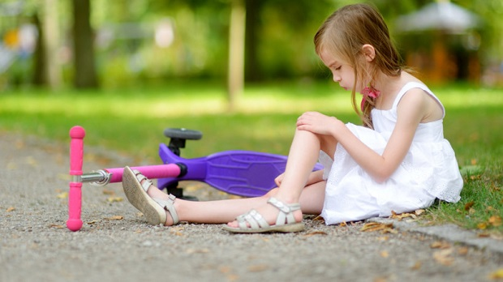
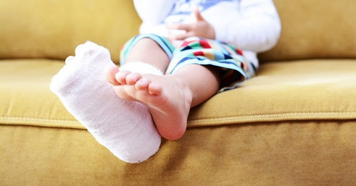
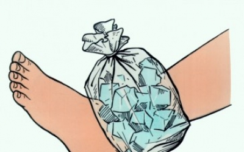
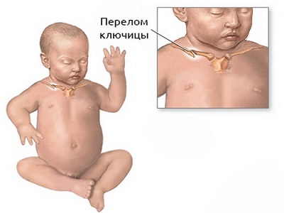
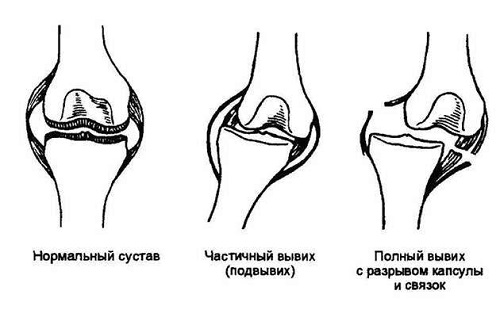
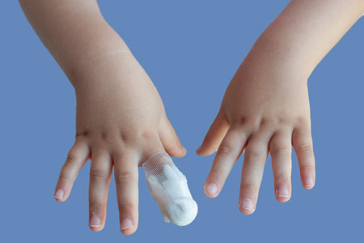
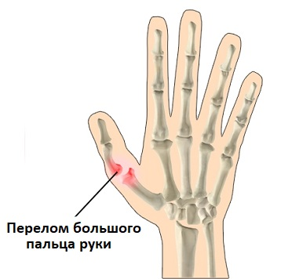
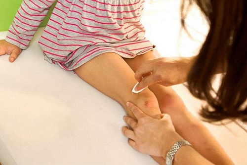
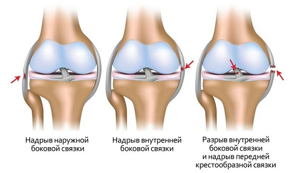
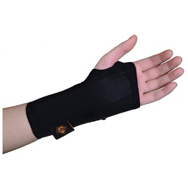

Практически каждый ребенок может вывихнуть лодыжку или колено, или упасть и повредить руку или ногу. Пальцы рук и ног могут биться и ломаться, а локти или запястья легко можно поранить. Главный вопрос, на который надо ответить, если это случилось, — есть ли вывих или перелом этой части тела и нужно ли сделать рентгеновский снимок. Когда это установлено, может быть применено подходящее лечение.
Термин растяжение означает, что одна или больше связок в суставе были слишком растянуты или частично порваны. Связки — это упругие волокна, которые соединяют одну кость с другой. Например, связки голеностопного сустава соединяют концы костей голени с костями ступни. Когда лодыжка изогнута или сильно согнута, связки растягиваются, что приводит к растяжению. Когда связка полностью порвана, травма называется «разрыв связок», что происходит, например, при травме колена, приводящей к досрочному окончанию спортивного сезона.
Когда кости ломаются, травмы называются переломами. Распространено ошибочное мнение, что слово «перелом» означает, что кость только частично сломана. Правда заключается в том, что любой разлом в любой части кости называется переломом. Существует множество различных степеней перелома; чем тяжелее перелом, тем дольше он будет заживать.
Вот что вам нужно знать, когда ваш ребенок получает травму.
ТРАВМЫ ЛОДЫЖКИ
Само собой разумеется, что травма лодыжки — самая распространенная травма, получаемая в детстве, поскольку лодыжка очень активно — и неправильно — используется. Осматривая вашего ребенка, врач будет изучать не только место растяжения, но и его тяжесть. Большинство детей и подростков получают растяжение лодыжки, случайно подогнув ногу и слишком растянув суставные связки. Растяжение лодыжки чаще всего происходят у детей, которые занимаются видами спорта, включающими бег, прыжки и внезапное изменение направления, например, баскетболом и гимнастикой.

КАК ОПРЕДЕЛИТЬ И ЧТО ДЕЛАТЬ
Записывайте подробности. Ваша роль в качестве домашнего врача своего ребенка заключается в обеспечении вашего педиатра письменными комментариями обо всем, что вы вспомните о травме, например:
СОВЕТ ДОКТОРОВ СИРС: ЛЕЧЕНИЕ ТРАВМ ДОМА! Правильно оказав первую помощь при любом вывихе или переломе, можно значительно помочь выздоровлению. Используйте следующие методы: Отдых: ребенок не должен становиться на травмированную ногу или поднимать что-либо травмированной рукой, пока врач не обследует травму. Исключение любого давления на поврежденную кость или сустав в течение первых 48 часов может значительно ускорить выздоровление. Лед: прикладывайте пакет со льдом на 15 минут, затем на 15 минут убирайте, и так на протяжении первых нескольких часов. Лед не только облегчает боль и уменьшает отек, охлаждение способствует рефлекторному расширению кровеносных сосудов, что позволяет всем природным лечебным питательным веществам, содержащимся в крови, попасть к месту травмы. Продолжайте прикладывать лед в течение 2—3 дней (примерно на 15 минут каждый час) или в соответствии с рекомендациями вашего врача. Сжатие: оберните (если возможно) травмированный сустав эластичным бинтом, но не слишком плотно. Сочетание обертывания и льда должно уменьшить кровоизлияние и отек. Поднятие: чтобы уменьшить боль и отек, устройте, чтобы ребенок сидел и спал с приподнятой примерно на уровень сердца травмированной лодыжкой. Подушка, подложенная под лодыжку во время сна, действительно помогает. |
КОГДА ОБРАЩАТЬСЯ К ВРАЧУ
Не удивляйтесь, если ваш врач, просмотрев историю травмы вашего ребенка (которую вы записали и принесли с собой, не так ли?), сначала обследует неповрежденную лодыжку. Врач делает это по двум причинам:
Затем ваш врач обследует поврежденную лодыжку, чтобы определить, нет ли перелома. Подозрение на перелом и определение необходимости проведения рентгеновского снимка зависит от каждого конкретного случая. Объяснение деталей принятия этого решения не входит в круг интересов этой книги. Вы, возможно, заметили, что ваш врач очень серьезно относится к любым растяжениям связок у детей и подростков. Вот почему: на конце каждой кости находится зона роста, которая на рентгенограмме выглядит как линия между частью, расположенной на конце кости, и остальной костью. Эта зона постоянно заполняется новой костной тканью, и именно благодаря этому ребенок растет. В отличие от подростка или взрослого, достигшего полного роста, при растяжении сустава у ребенка прилегающие к нему связки могут сместить пластинку роста с остальной кости. Если это не выявить и не лечить, поврежденная пластинка роста может перестать выполнять свою функцию и помешать росту этой кости. Вот почему ваш врач может назначить вашему ребенку рентгенографию или направить его к ортопеду. Кроме растяжения связок, возможен перелом на конце одной или нескольких костей лодыжки.
ЛЕЧЕНИЕ
Лечение любого перелома лодыжки должно проводиться ортопедом. Оно будет зависеть от типа и тяжести перелома. При растяжении лодыжки ваш врач выработает план лечения, который будет нацелен на:
План лечения будет в основном продолжением плана «отдых — лед — сжатие — поднятие», описанного выше.
Отдыхайте. Убедитесь, что ваш ребенок понимает важность того, что нельзя нагружать лодыжку. Можно взять в аренду или купить в аптеке костыли. Чем больше дней будет отсутствовать нагрузка на лодыжку, тем быстрее она поправится. По прошествии примерно трех дней позвольте своему ребенку попробовать встать на поврежденную ногу. Когда он сможет делать это, не ощущая боли, разрешите ему осторожно ходить, не перенапрягаясь. Продолжайте использовать костыли при длительном хождении (например, в школе), пока ваш ребенок не сможет подолгу ходить, не испытывая боли.

СОВЕТ ДОКТОРОВ СИРС: ДВА СРЕДСТВА ПРЕДОТВРАЩЕНИЯ ТРАВМ СУСТАВА (ЛОДЫЖКА, КОЛЕНО И БЕДРО) Оставайтесь худым. Чем больше лишнего веса у вашего ребенка, тем больше вероятность того, что он травмирует эти суставы. При восхождении по лестнице или на холм нагрузка на голеностопные и коленные суставы в четыре раза больше, чем при простом стоянии. Не торопитесь. Если ваш ребенок начал заниматься новым видом спорта, предупредите его о вреде чрезмерного использования мышц и суставов. Для построения более сильных костей и мышц требуется несколько недель, вот почему растяжения и переломы более вероятны в начале занятий спортом. |
Не забывайте восстанавливаться. Как вы думаете, когда риск повторной травмы сустава у вашего ребенка будет самым большим? Ответ: в течение нескольких недель после первой травмы. Логичный принцип здоровья мышц и костей: «Если не используете — теряете». В то время как сустав ребенка был занят обеспечением заживления, окружающие мышцы ослабели. Таким образом, мышцы и весь сустав более склонны к повторной травме сразу же после того, как ребенок начинает снова двигаться. Когда врач разрешит вам начать упражнения по укреплению мышц и суставов, отведите ребенка на плавание. Это отличная реабилитация после травм сустава, поскольку сустав двигается без излишнего напряжения.

ТРАВМА КЛЮЧИЦЫ
Ключица — это кость, которая связывает грудину — грудную кость — с плечевым суставом. Ключица участвует в движениях плеча и руки. Перелом ключицы может произойти у младенца при сложных родах через естественные родовые пути или в любое время в детстве или взрослой жизни при травме.
СИМПТОМЫ
Симптомы, которые указывают, что, возможно, ваш младенец сломал ключицу в родах, могут быть следующие:

Симптомы, которые могут указывать на то, что у вашего ребенка сломана ключица:
|
ПРИЧИНЫ
Механизм перелома ключицы зависит от возраста пострадавшего:
ЛЕЧЕНИЕ
Новорожденные. Поскольку переломы ключицы не часто встречаются у новорожденных и их довольно легко обнаружить при осмотре, как правило, врач не будет назначать рентгеновское исследование для подтверждения диагноза. Лечение заключается просто в фиксации руки ребенка в горизонтальном положении: нижнюю часть его футболки или одежды оборачивают вокруг руки и край надежно прикрепляют булавкой к футболке в области груди. Это играет роль свободной подвязки, которая держит руку в удобном положении, пока она будет заживать в течение нескольких следующих недель. Рука не должна быть зафиксирована плотно или неподвижно. Вы должны позволить ребенку двигать рукой несколько раз в день, чтобы избежать ригидности.
Дети. Заподозрив перелом ключицы у ребенка, врач сделает рентгеновские снимки.
В большинстве случаев перелом ключицы у детей старшего возраста полностью заживает в течение 12 недель, если проводится правильное лечение с помощью шины. У пациентов помладше на это может потребоваться меньше 6 недель. Разрешены такие действия, как бросание мяча, поднятие тяжелых предметов, вождение и так далее, только если они не причиняют боль. После перелома ключицы в месте перелома может остаться болезненная припухлость, которая пройдет только спустя месяцы или годы. |
В большинстве случаев сломанная ключица требует лишь ношения поддерживающей повязки для удержания руки и плеча на месте. Одна из самых распространенных повязок — «восьмерка»: бинт поводится вокруг туловища со стороны поврежденной ключицы, под предплечьем, затем по задней части шеи, через противоположную сторону, и снова под предплечье с пострадавшей стороны. Эта довольно сложная повязка накладывается, только если перелом такой сильный, что один конец кости прорвался через кожу, или в случае, когда сломанные кости сильно смещены друг от друга. В крайне редких случаях при сломанной ключице может потребоваться хирургическое вмешательство для выравнивания сломанной кости.
ВЫВИХ ЛОКТЯ («ЛОКОТЬ НЯНИ»)
Растяжение или вывих локтя — самая распространенная травма локтя у детей младшего возраста. Представьте следующую картину: вы идете по многолюдной улице, держа ребенка за руку, и внезапно он начинает злиться и пытается убежать от вас. Он дергается в одну сторону, а вы тащите в другую. Или это может быть рефлекс предотвращения опасности: ребенок собирается выбежать на улицу и его хватают за руку, чтобы уберечь от опасности. Затем вы замечаете два признака: ребенок не использует руку, и она висит сбоку, обмякшая и болезненная. Возможно, локоть вашего ребенка вывихнут.
ПРИЗНАКИ И СИМПТОМЫ
ПОЧЕМУ ПРОИСХОДИТ ВЫВИХ ЛОКТЯ
Связки, которые держат кости плеча и предплечья в локте, у малышей и дошкольников намного более эластичные. Резкий рывок за нижнюю часть руки может привести к выскакиванию кости (лучевой) из суставной ямки. По мере того как ребенок растет, связки становятся менее эластичными, из-за чего случаи вывиха локтя у детей старше 7 лет становятся редкими.
ЧТО ДЕЛАТЬ
Отведите ребенка к педиатру, который сможет вправить локоть простым движением. Иногда ребенку может понадобиться поберечь локоть в течение пары часов, вот почему мы часто накладываем повязку на день, чтобы растянутые связки могли зажить. Вы можете сделать простую повязку из футболки ребенка, замотав руку в нижнюю переднюю часть футболки и закрепив ее на уровне груди.
Самостоятельное вправление. Если у вашего ребенка был вывих локтя, это вполне может повториться при обычной игре. Поскольку это может произойти, когда у вас не будет возможности немедленно отправиться в больницу, попросите врача показать вам, как вправить локоть, чтобы в следующий раз вы могли это сделать, или следуйте этим шагам: во-первых, поверните предплечье ребенка так, чтобы рука была поднята вверх (это называется супинацией — вращением кнаружи). Иногда уже это движение вправит локоть. Если нет, во время вращения предплечья кнаружи согните локоть, пока ладонь ребенка почти не коснется плеча. При этом расположите свои большой и указательный пальцы поверх локтевого сустава, и вы почувствуете, что кость руки «вправилась» обратно в локтевой сустав. Вы узнаете, успешно ли вы провели эти маневры, поскольку ребенок сразу начнет нормально двигать рукой.
После вправления в течение нескольких минут понаблюдайте за тем, как играет ваш ребенок, чтобы определить, нормально ли он пользуется рукой и успешно ли вправление.
Никогда не пытайтесь вправлять самостоятельно, если у вашего ребенка следующие симптомы:

ТРАВМЫ ПАЛЬЦЕВ РУК И НОГ
Пальцы рук и ног принимают на себя основной удар о твердое, о дверные косяки и захлопывающиеся двери. К счастью, большинство таких случаев не требуют обращения к врачу. Вот информация, которая поможет вам выбрать наилучшую последовательность действий.
СОВЕТ ДОКТОРОВ СИРС: ПОДНИМАЙТЕ ПРАВИЛЬНО Всегда поднимайте своего ребенка за туловище, держа его под обе мышки, и проинструктируйте остальных, кто о нем заботится, делать так же. Никогда не тяните за одну руку. |
Перелом или просто растяжение? На самом деле это зачастую не имеет значения ни для какого из пальцев (за исключением больших пальцев рук и ног). Во всяком случае, при переломе пальца, как правило, не нужен гипс, поэтому вам на самом деле не обязательно знать, сломан он или нет. Во-первых, прикладывайте к нему лед примерно на 20 минут каждый час в течение дня. Затем просто наложите не него «дружескую повязку» (читайте подробности ниже), и пусть он заживает в течение нескольких недель. Если улучшение будет всего через несколько дней, значит, палец, возможно, не сломан. С другой стороны, многие травмы пальцев требуют особого типа подвязки и внимательного наблюдения у ортопеда. Поэтому, возможно, будет лучше посетить врача, который поможет установить необходимость выполнения рентгеновского снимка, особенно если произошло что-то из нижеперечисленного:
Большой палец руки или ноги. Если вы думаете, что ваш ребенок сломал большой палец на руке или ноге (основываясь на силе воздействия или степени боли и отека), вам следует обратиться к врачу.
Палец согнут под углом. Если палец руки или ноги согнут под странным углом (сравните с противоположной конечностью), то этот тип перелома может требовать специального лечения.
Сломанный сустав. Если боль и отек сильнее в области сустава, возможно, стоит сделать рентгеновский снимок. Некоторые переломы суставов требуют специального лечения.

Спортсмены. Если ваш ребенок занимается спортом или очень подвижен и существует большая вероятность того, что он может повторно травмировать палец, лучше сделать рентгеновский снимок. Если есть перелом, может быть наложен гипс для ускорения заживления, чтобы ребенок быстрее мог вернуться к занятиям спортом или чтобы защитить палец, если ваш ребенок собирается продолжить их, невзирая на травму. |
Глубокое размозжение. Если вы считаете, что ребенок, возможно, сломал кость и наблюдается не просто маленький порез, в тот же день посетите врача. Такие раны легко инфицируются.
Не может согнуть его. Несмотря на боль, ваш ребенок должен быть способен сгибать пальцы при большинстве легких переломов. В противном случае это может означать более серьезную травму.
Во время травмы палец согнулся или вывихнулся. Некоторые переломы кончиков пальцев, полученные, например, во время ловли мяча или когда палец застрял в одежде, требуют специальной повязки для хорошего заживления.

ЛЕЧЕНИЕ
Легкие и прямые переломы пальцев рук и ног заживают в течение нескольких недель и без гипса. Купите бумажную ленту и перевяжите травмированный палец руки или ноги вместе с большим соседним пальцем (это называется «дружеская повязка»), но без совета врача не перевязывайте так большой палец руки или ноги. Ребенок должен держать пальцы не прямо, а слегка согнутыми. Один раз в день снимайте повязку и говорите ребенку осторожно сгибать и распрямлять пальцы, чтобы избежать скованности.
ТРАВМЫ КОЛЕНА
Растяжения коленных связок очень часты и обычно проходят без какого-либо специального лечения, с помощью лишь отдыха и льда. Тем не менее травмы колена могут беспокоить родителей из-за возможности травмы или разрыва связок, а родителям не просто определить серьезность травмы без консультации врача. Вот наше руководство, описывающее различные типы травм колена, и рекомендации, когда необходимо отвести ребенка к врачу.
Растяжение связок коленного сустава. Растяжение происходит после легкого скручивания или растяжения колена, когда одна из связок (волокнистая ткань, которая связывает вместе кости коленного сустава) слегка растягивается. К симптомам относится незначительная боль при сгибании или попытке встать, болезненность и отек травмированной области. Ребенок при этом способен двигать коленом во всех направлениях и боль при ходьбе должна быть от слабой до умеренной.

ЛЕЧЕНИЕ
Самое главное — немедленно предпринять описанные ниже меры:
• Отдых. Попытайтесь избежать нагрузки на колено. Если есть возможность, в течение дня пользуйтесь костылями или помогайте ребенку, когда он ходит. Полное отсутствие нагрузки на колено в течение первых 24 часов может поспособствовать быстрому излечению легкого растяжения. Если ребенок будет хромать на растянутое колено, это усугубит отек и раздражение и замедлит заживление.
СОВЕТ ДОКТОРОВ СИРС: РАСТЯЖЕНИЕ ИЛИ ПЕРЕЛОМ? Местная болезненность говорит о возможном переломе и требует рентгеновского снимка. Если ваш ребенок четко указывает на определенное место и стонет, когда вы нажимаете на него, это может указывать на сломанную кость. Если ваш ребенок не может точно назвать место и обводит болезненный участок, вместо того чтобы указать на определенную точку, и вы не можете определить точное место боли, скорее всего, это окажется растяжением. Если сомневаетесь, обратитесь к врачу. |

КОГДА СТОИТ БЕСПОКОИТЬСЯ
Растяжение должно немного улучшиться на следующий день, а через 3—4 дня должно пройти вовсе, как и все симптомы. Если этого не происходит, это может быть серьезной травмой связок (читайте ниже).
Травма связок. Если одна из коленных связок сильно растянута, надорвана или вообще разорвалась, то боль и отек появятся немедленно и будут очень сильными. Колено будет неустойчивым и может подвести при нагрузке. Врач-ортопед часто может отличить растяжение и травму связок, внимательно осмотрев колено, но для установления точного диагноза понадобится магнитно-резонансная томография.
ЛЕЧЕНИЕ
Помимо первой помощи (описанной выше) и ибупрофена, вашему ребенку, скорее всего, понадобятся:
Разрыв мениска или хряща. Мениск — это ткань, которая амортизирует коленный сустав и позволяет ему работать гладко. Хрящ образуется в том месте, где кости соприкасаются и возникает трение. Травма этих тканей поначалу может быть не слишком болезненна и вызывать не очень сильный отек, но ребенок будет испытывать хроническую и повторяющуюся боль, ощущая выпирание и трение в коленном суставе. Порванная ткань будет видна на магнитно-резонансной томограмме. Лечение обычно хирургическое.
Перелом надколенника. Эта редкая травма происходит, когда ребенок падает прямо на надколенник — коленную чашечку. Боль довольно сильная, особенно при нажатии на коленную чашечку. Перелом диагностируется при помощи рентгеновского снимка, и зачастую требуется хирургическое вмешательство.
ТРАВМЫ ЗАПЯСТЬЯ
Травмы запястья часто встречаются у детей, поскольку запястья обычно принимают на себя всю тяжесть веса ребенка при падении вперед. Важно определить, является ли травма запястья просто растяжением или переломом. Если поврежденный сустав недостаточно хорошо лечить, это может привести к проблемам в будущем.
СОВЕТ ДОКТОРОВ СИРС: СЛОМАННЫЕ КОСТИ МОГУТ СТАТЬ КОРОЧЕ В запястье, являющемся окончанием руки, находятся пластинки роста — специализированные клетки костной ткани, которые размножаются, тем самым удлиняя кость. Если они повреждены, рост кости может быть ограничен. Вы заметите, что врач «простукивает» места расположения пластинок роста, чтобы проверить наличие боли и отека. |
Растяжение запястья. Неудачное падение на запястье или другое происшествие может привести к растяжению запястья — повреждению сухожилий и/или связок. Эти ткани соединяют мышцы и кости и могут воспалиться, стать отечными и болезненными, если их травмировать. Признаками растяжения являются:

Растяжения запястья проходят за несколько недель. Не давайте ребенку оказывать сильную нагрузку на запястье, поскольку это может увеличить время выздоровления. При растяжении запястья обычно не требуется обращаться к врачу, но, если вы сомневаетесь, пусть врач осмотрит ребенка в свои приемные часы.
Перелом запястья. Подвижные и неугомонные дети и подростки часто сильно падают, что может привести к переломам запястья. К такой травме могут привести катание на скейтборде, сноуборде или другой вид спорта, где ребенку приходится при падении смягчать приземление рукой. При любом происшествии, при котором возможен перелом запястья, необходимо НЕМЕДЛЕННО обращаться к врачу. Промедление в диагностике и лечении переломов запястья может привести к постоянной инвалидности или неподвижности сустава.
СОВЕТ ДОКТОРОВ СИРС: БУДЬТЕ ГОТОВЫ К ПОЯВЛЕНИЮ ПРИПУХЛОСТИ Не удивляйтесь и не волнуйтесь, если вы нащупываете припухлость размером с мяч для гольфа по прошествии нескольких месяцев после того, как перелом зажил. То, что вы нащупываете, — это реструктуризация костей, что является частью нормального процесса их срастания. |
В первые несколько лет жизни кости запястья обычно слишком маленькие, чтобы их можно было серьезно травмировать. Но по мере того как кости растут, они становятся более подверженными травмам. 8 маленьких костей составляют запястный сустав. Одна из костей, которая чаще всего ломается при травме запястья, называется «ладьевидной» и находится под большим пальцем. При переломе запястья дети часто жалуются на сильную боль и отек запястья.
При переломе боль, как правило, сильнее всего в одном точном месте, тогда как при растяжении болезненна вся область. Педиатр может обследовать запястье, чтобы определить, нужно ли делать рентгеновский снимок для исключения перелома запястья.

Лечение заключается в наложении гипсовой повязки или бандажа на срок от 4 до 6 недель, чтобы зафиксировать сустав в одном положении, давая костям срастись.
Здоровье ребенка от докторов Сирс / Сирс У. и др.